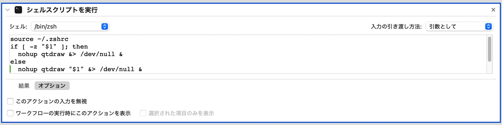

QtDraw のインストール#
英語版はこちらです。
QtDraw は、Python 3.12 以降で pip を使って PyPI からインストールできます。
必要なもの#
Python ≥ 3.12
MultiPie は結晶の対称操作を提供します。QtDraw とともに自動でインストールされます。MultiPie がインストールされていない場合は、MultiPie ボタンから pip でインストールできます。
インストール#
Python の環境を準備します
macOS
Homebrew をインストールします（まだ入っていない場合）。
Python をインストールします：
brew install python@3.13
Python（と、必要なら LaTeX）のパスを
.bashrcまたは.zshrcに加えます：export PATH=/opt/homebrew/opt/python@3.13/libexec/bin:$PATH
仮想環境（例：
~/.venv）を使う場合は、その bin ディレクトリを PATH の先頭に加えます。シェルを再起動します。
Linux
ディストリビューションのパッケージマネージャを使うか、ソースから Python をインストールします。
Python（と、必要なら LaTeX）のパスをシェルの設定ファイル（例：
.bashrcまたは.zshrc）に加えます：export PATH=/path/to/python/bin:$PATH
仮想環境を使う場合は、その bin ディレクトリがグローバルな Python のパスより前に来るようにします。
WSL2（例：Ubuntu 22.04.4 LTS）では、
.bashrcに次の行を加えます：export QT_QPA_PLATFORM=xcb
そして、必要なシステムライブラリをインストールします：
sudo apt update sudo apt upgrade # optional, but recommended sudo apt install libxcb-cursor0
シェルを再起動します。
Windows
次のページの説明に従って、PowerShell と Python をインストールします： https://microsoft.com/PowerShell
インストールの際に、Python のパスがシステムの PATH に加えられるようにします。
QtDraw をインストールします
必要な依存パッケージはすべて自動でインストールされます。LaTeX の表示に MathJax を使うには、playwright のブラウザをインストールします（必要なのは chromium の headless shell だけで、約 200 MB です）。ブラウザがないと LaTeX はそのままの文字列で表示され、QtDraw は起動時にそのインストールを提案します。
pip install qtdraw playwright install --only-shell chromium # on Linux, also run `sudo playwright install-deps chromium`.
MultiPie を更新します（オプション）
対称操作のツール MultiPie は、QtDraw とともにインストールされます。このバージョンの QtDraw (3.4) は MultiPie Ver.2（2.5 以降）と Ver.3 の両方で動作します。それらの最新版に更新するには：
pip install -U "multipie>=2.5,<4"
QtDraw のファイル（.qtdw）をアプリケーションに関連づけます
.qtdw、.cif、.vesta、.xsfの拡張子を次のアプリケーションに関連づけておくと便利です。
MacOS
QtDraw_MacApp.zip をダウンロードして展開し、Applications フォルダに移動します
拡張子を
QtDraw.appに関連づけます（注）
QtDraw.appは、次のスクリプトを使って Automator で作られています：source ~/.zshrc if [ -z "$1" ]; then nohup qtdraw &> /dev/null & else nohup qtdraw "$1" &> /dev/null & fi

Windows
拡張子を、
Scriptsフォルダにあるqtdraw.exe、または QtDraw_WinApp.zip に関連づけますScriptsは、通常C:\Users\<username>\AppData\Local\Programs\Python\Python<version>\の下にあります
シェルコマンド#
QtDraw は、次のコマンドラインユーティリティを提供します：
qtdraw [filename]：QtDraw のファイル（.qtdw。拡張子は省略できます）または物質のファイル（.cif、.vesta、.xsf）を開きます。conv_qtdraw3 ver1_file[.qtdw]：バージョン 1 の.qtdwファイルをバージョン 3 に変換し、同じ場所にver1_file_v3.qtdwとして書き出します。
例についてははじめにのガイドを参照してください。
ソースコード#
GitHub: CMT-MU/QtDraw